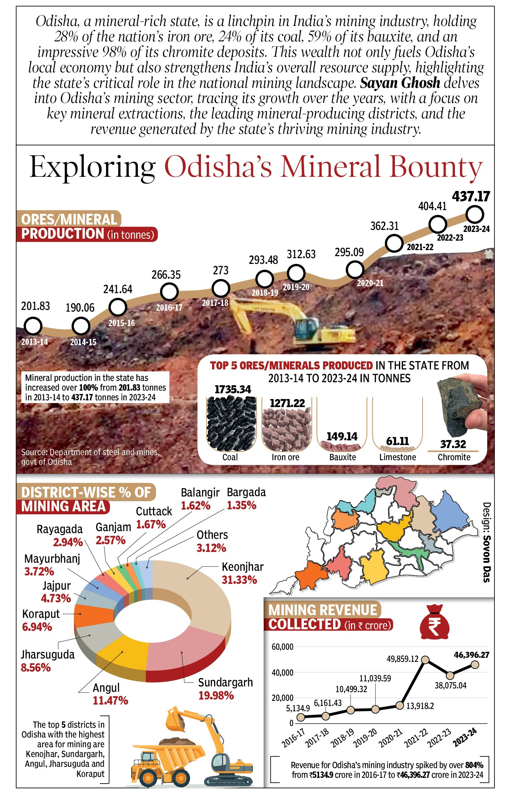

Odisha holds 98% of India’s chromite deposits, 59% of its bauxite, 28% of its iron ore and 24% of its coal. The state’s mineral output more than doubled in a decade, from 201.83 million tonnes in 2013-14 to 437.17 million tonnes in 2023-24, led by coal and iron ore, and its mining revenue rose ninefold, from ₹5,134.9 crore in 2016-17 to ₹46,396.27 crore in 2023-24. Five districts, Keonjhar, Sundargarh, Angul, Jharsuguda and Koraput, hold most of the land under mining.
